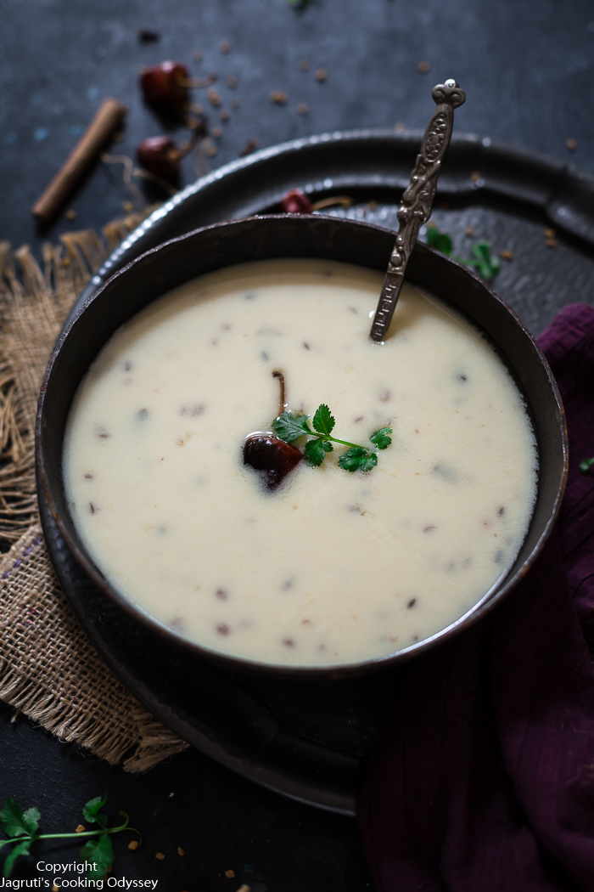

Gujarati Kadhi

Description
Gujarati kadhi is a sweet tangy yogurt-based dish made with gram flour, spices, herbs and seasonings. This easy variant of kadhi is made without gram flour fritters (pakoda). It makes for a quick comforting lunch or dinner paired with a side of steamed basmati rice or roti.
Ingredients
- 2 cup curd / yogurt
- 6 tbsp besan / gram flour
- 1 tsp ginger paste
- 2 tsp sugar
- 4 cup water
- 2 tbsp ghee / clarified butter
- 1 tsp mustard
- 1 tsp cumin / jeera
- 0.5 tsp methi / fenugreek
- 6 clove / lavang
- 2 inch cinnamon
- 2 dried red chilli
- pinch hing / asafoetida
- few curry leaves
- 4 chilli (slit)
- 1.5 tsp salt
- 4 tbsp coriander (finely chopped)
Steps
- firstly, in a large bowl take 1 cup curd, 3 tbsp besan, ½ tsp ginger paste and 1 tsp sugar.
- add 2 cup water and whisk smooth without forming any lumps. keep aside.
- now in a large kadai heat 1 tbsp ghee and splutter ½ tsp mustard, ½ tsp cumin, ¼ tsp methi, 3 clove, 1 inch cinnamon, 1 dried red chilli, pinch hing, few curry leaves and 2 chilli.
- pour in prepared curd besan mixture and mix well.
- keeping the flame on low, stir for 5 minutes or until the mixture comes to a boil. else the curd might curdle.
- continue to boil for 15-20 minutes on medium flame stirring occasionally.
- further, add 1 cup water adjusting consistency as required.
- also, add ¾ tsp salt and simmer for 2 minutes.
- finally, add 2 tbsp coriander and serve gujarati kadhi with hot steamed rice.
Home Page